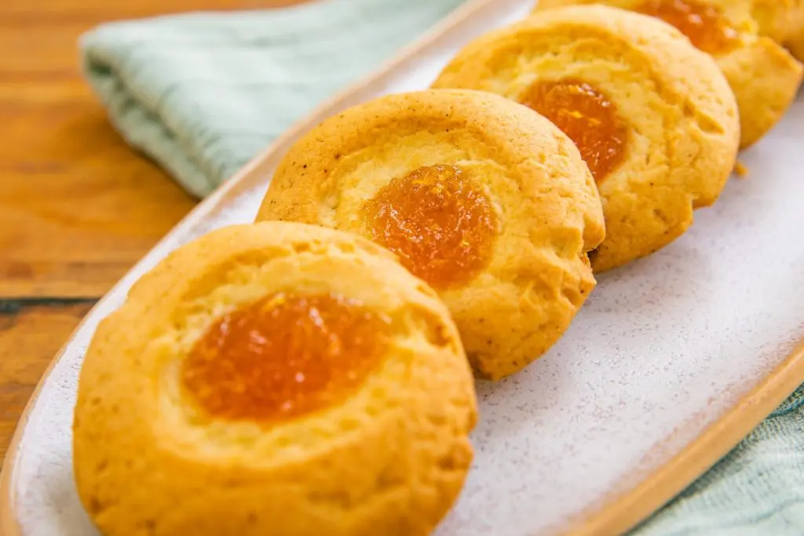

Pepas de mango
Ingredientes:
- 150gr Manteca pomada
- 100gr Azúcar impalpable
- 1 Huevo
- 250gr Harina 0000
- 1 cdta Polvo de hornear
- 1/2 cdta Sal
- Dulce de mango
- Ralladura de naranja
- Ralladura De Lima
Preparación de la Receta:
- En un bowl mezclar durante quince minutos manteca pomada, azúcar impalpable con batidora de mano hasta cremar.
- Luego agregar huevo y volver a batir hasta unir.
- Añadir ralladura de naranja y de lima.
- Incorporar harina, polvo de hornear, sal (todo tamizado) y trabajar con espátula de goma.
- Volcar entre 2 papeles manteca, aplastar y llevar a frio por 60 minutos.
- Hacer bolitas con la masa y acomodar bien separadas en placa enmantecada.
- Con el dedo pulgar aplasta el centro de cada bolita y con manga rellenar con dulce de mango, enfriar por 20 minutos y llevar a horno por 20 minutos a 180ª hasta dorar apenas los bordes.
